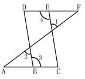

【题文】如图,在△ABC中,∠ABC=90°,AB=4,BC=3. 点O是边AC上的一个动点,以点O为圆心作半圆,与边AB相切于点D,交线段OC于点E.作EP⊥ED,交射线AB于点P,交射线CB于点F。（ ）

A．AB//CD
B．AD//CD
C．AC//CD
D．AF//CB
【题文】我想起泰戈尔在《新月集》里写过的诗句：“只要他肯把他的船借给我……我将带我的朋友快快乐乐地航行于仙人世界。”那么，就把自己放逐一次吧，就借来别人的 船张帆出发吧。 只有年轻时去远方，才会拥有充满泰戈尔童话般色彩的经历和收益，那不仅是他书写在心灵中的诗句，也是你镌刻在生命里的年轮。请回答以下问题：
（1）．文章开头写儿子在美国漫游，在结构和内容表达上有什么作用?请分别概括。
（2）．作者叙述中国留学生在西柏林和“我”在北大荒这两件事，各侧重说明了什么?
（3）．第6段画线的句子表达在了什么意思?语言上有什么特点?
（4）．文中多处流露出了作者对“去远方”的情感态度，请简要概括。
（5）．细读全文，结合自己的认识，谈谈你怎样正确理解作者反复强调的“年轻时就要去远方”的观点。
【题文】最妙的是下点小雪呀。看吧，山上的矮松越发的青黑，树尖上顶着一髻儿白花，好像日本看护妇。山尖全白了，给蓝天镶上一道银边。山坡上，有的地方雪厚点儿， 有的地方草色还露着；这样，一道儿白，一道儿暗黄，给山们穿上一件带水纹的花衣；看着看着，这件花衣好像被风儿吹动，叫你希望看见一点更美的山的肌肤。等到快日落 时候，微黄的阳光斜射在山腰上，那点薄雪好像忽然害了羞，微微露出点粉色。就是下小雪吧，济南是受不住大雪的，那些小山太秀气！
（1）．用“‖”把这段文章划分为三层。 A. 本体是白花，喻体是日本看护妇。
B. 本体是树尖上顶的白雪，喻体是日本看护妇。
C. 本体是树尖上顶的白雪，喻体是白花。
D. 本体是顶着白雪的树的样子，喻体是日本看护妇。
A. 描写黄白相间的山坡，春风化雪，不久人们就会见到山坡原有的颜色。
B. 表现济南冬天的温和，雪化了，有水在山坡流动；“山的肌肤”指山坡的草地。
C. 描写济南冬天的温和，有水蒸气蒸发升腾的美景，不久雪就会全化了，山坡上原有的颜色比雪色更美。
D. 描绘了雪色与草色相同的美景，像穿着好看的衣服；“山的肌肤”指春天来临后满山的花草。
A. 小雪后山色
B. 小山太秀气
C. 小雪最妙
D. 山的肌肤